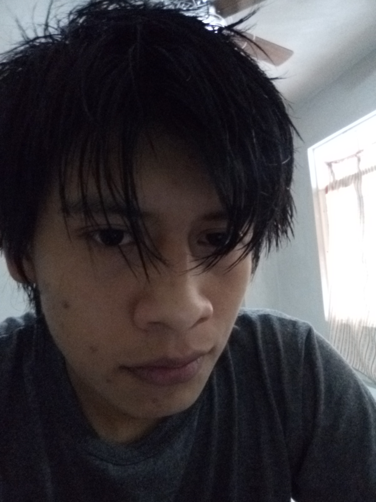

José Isidro Mecatl Cuatzo
soy un estudiante en la licenciatura ingeniería en sistemas.Me encanta el mundo de la programacion y las redes de internet.
CONCLUSION: las imagenes nos sirven de mucha ayuda, desde captar momentos increibles y divertidos hasta capturar lugares donde nunca podriamos visitar, hoy en dia las imagenes soy un factor muy importante en el que podemos editar una imagen en algo mucho mas sorprendente a traves de herramientas digitales, todo esto al alcance de nuestro telefono inteligente, tan grande es este mundo de las imagenes que lo hemos echo parte de nuestra vida diaria como por ejemplo los memes son una clara representacion de lo magnifico que hay en este mundo que es el reirse a costa de otros, por esa imagen editada o momento gracioso captado en ese preciso momento.
Josue Naum Ramirez Blanco
soy un estudiante en la licenciatura ingeniería en sistemas.Sé cataloga así mismo como alguien proactivo ante cualquier situación.
CONCLUSION: La imagen actualmente se ah enfocado en una nueva forma de comunicar conocimiento específico de una manera visual e incluso psicológica, sin duda alguna una máxima presencia sobre la imagen la vemos día con día en sitios web y todo lo que engloba el utilizar internet, gracias a la imagen es que se logran obtener conceptos más exactos al momento de compartir información y cualquier descripción logra ser acertiva porque visualmente uno como individuo corrobora que es verdad, es un elemento fundamental de la multimedia que ha mejorado y ah evolucionado para dar una mejoría visual a cada individuo.
Cesar Edmundo Mota Juarez
soy un estudiante en la licenciatura ingeniería en sistemas.Se destaca por tener un buen gusto al momento de diseñar y tambien por ser responsable.
CONCLUSION: En el diseño se deben complementar y valorar cosas ,tales como la composición ,el brillo ,nitidez etc, sin embargo tenemos que ver otros aspectos como la edición el cual va de la mano con el tema del audio ya que se tiene que ver a fondo si esta muy alto o esta muy bajo el audio o que si se le van a poner efectos para mejorarlo ,y así mismo al editar videos por que se debe de ver que no se dañe o baje la calidad del vídeo pero actualmente existen programas y aplicaciones que permite hacer diversas opciones como el tema de cortar o de poner o implementar efectos de manera intuitiva.